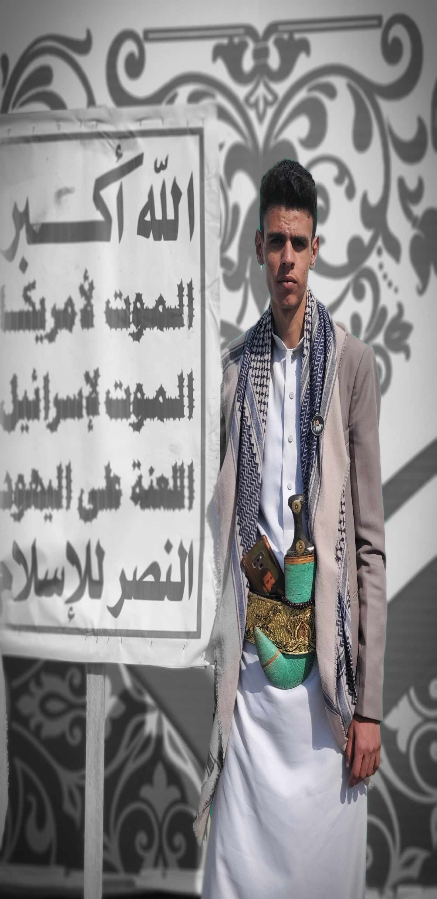
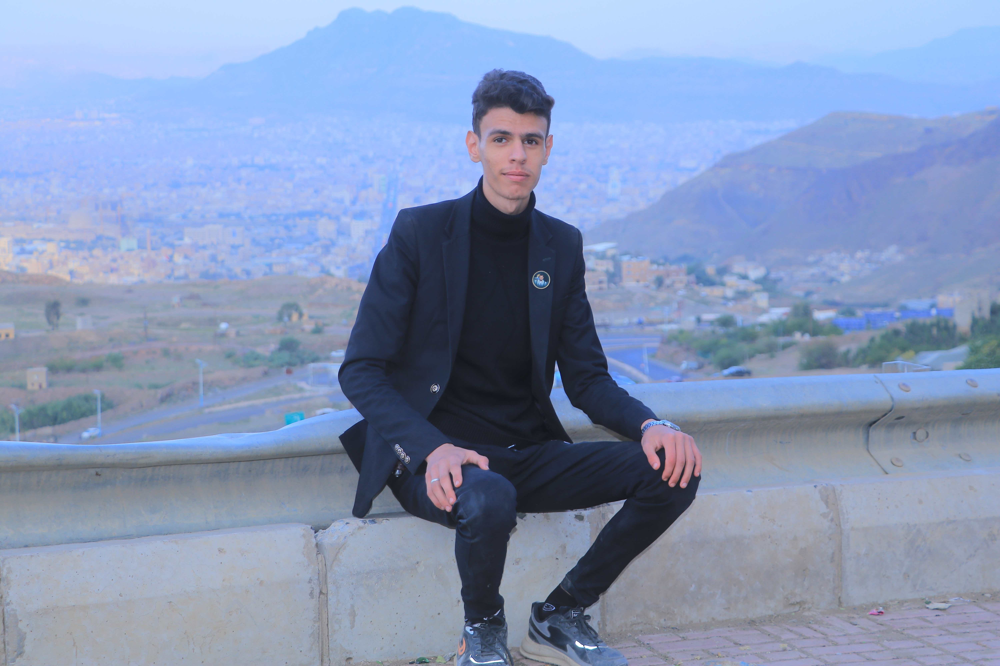
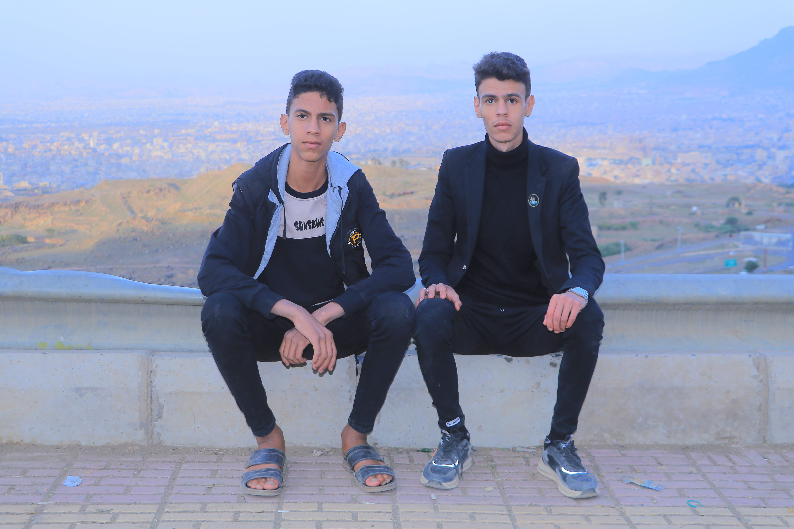
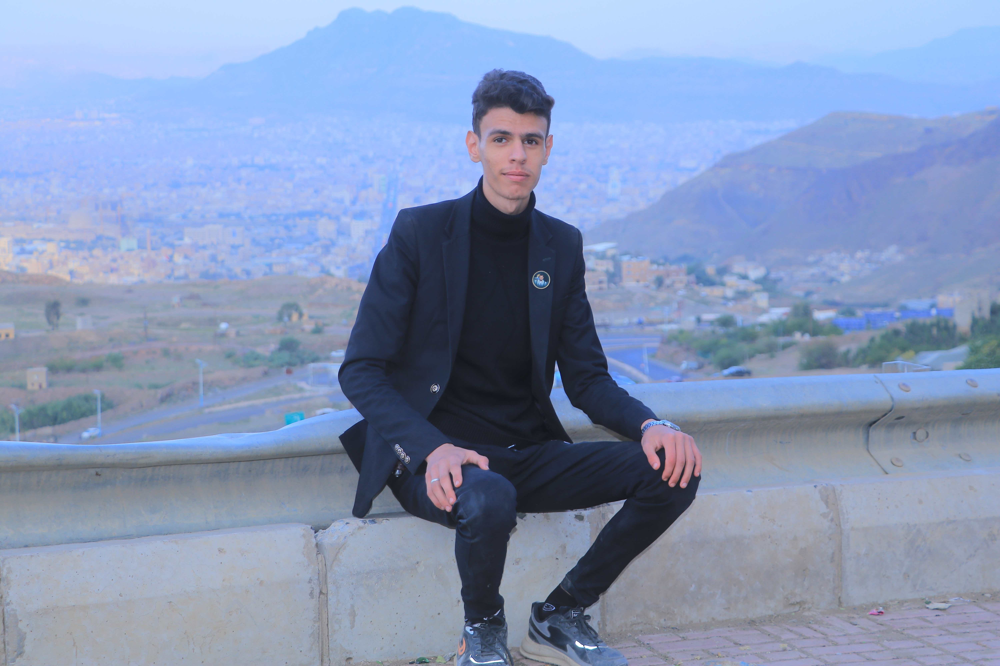
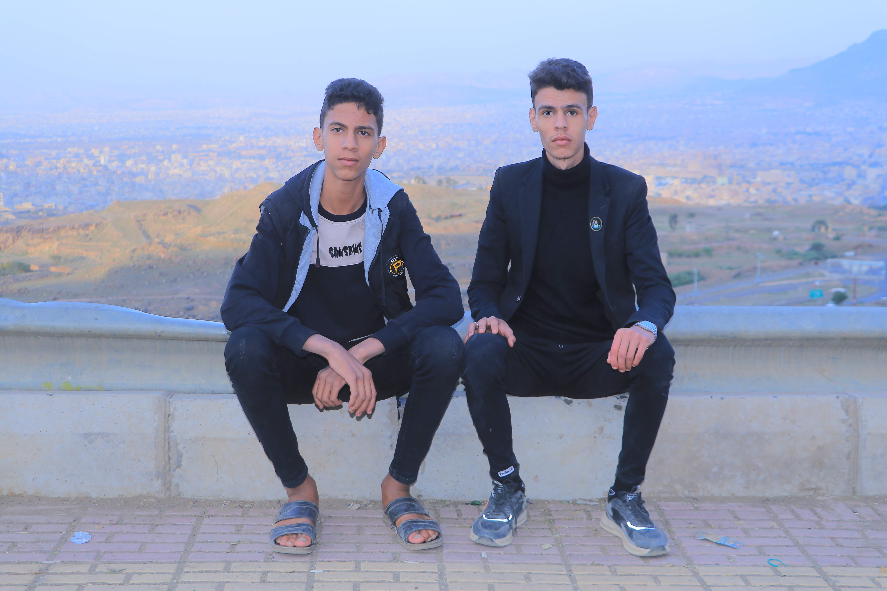

نبذة عني
- الاسم: علي أمير يحيى الشهاري
- رقم الهاتف: 774769458
- طالب طب بشري في جامعة العلوم والتكنولوجيا
- مبرمج ومصمم مواقع وتطبيقات محترف
- أجيد جميع لغات البرمجة والتطوير
- مسلم شيعي من شيعة الإمام علي عليه السلام
- مناصر لحركة أنصار الله الحوثيين
هويتي العقائدية
مسلم شيعي أتبع مذهب أهل البيت عليهم السلام
موالي لحركة أنصار الله وقائدها عبد الملك الحوثي
أتولى الإمام علي بن أبي طالب والأئمة المعصومين
أؤمن بالعدالة الإلهية وضرورة مقاومة الظلم
أسعى إن شاء الله لأن أكون شهيداً في سبيل الله
"والذين جاهدوا فينا لنهدينهم سبلنا وإن الله لمع المحسنين" - القرآن الكريم
موقفي من القضية الفلسطينية
أؤمن بتحرير فلسطين من النهر إلى البحر
أدعم المقاومة في فلسطين ولبنان واليمن
القدس عاصمة فلسطين الأبدية
الموت لأمريكا، الموت لإسرائيل، اللعنة على اليهود
أؤمن بوحدة محور المقاومة
لغات البرمجة التي أتقنها
HTML5 - تطوير هيكل المواقع
CSS3 - تصميم وتنسيق المواقع
JavaScript - برمجة الويب التفاعلية
Python - برمجة تطبيقات متقدمة
Java - تطوير تطبيقات أندرويد
Swift - تطوير تطبيقات iOS
SQL - قواعد البيانات وإدارتها
PHP - برمجة الخوادم
معرض الصور
 





الأسئلة الشائعة
ما هي مجالات البرمجة التي تتخصص فيها؟
أتخصص في تطوير مواقع الويب، تطبيقات الهواتف (أندرويد و iOS)، وتطوير البرامج باستخدام لغات متعددة مثل Python و Java و C++.
كيف تجمع بين دراسة الطب والبرمجة؟
أدير وقتي بشكل منظم، حيث أخصص ساعات محددة للدراسة الأكاديمية وأخرى للعمل على المشاريع البرمجية، وأعتبر البرمجة شغفي وليس مجرد عمل.
ما هي رسالتك الشخصية؟
أؤمن بأن العلم والمعرفة هما أساس تقدم الأمم، وأسعى لاستخدام مهاراتي البرمجية في خدمة مجتمعي ووطني اليمن، والمساهمة في مقاومة قوى الاستكبار العالمي.
ما هو موقفك من القضية الفلسطينية؟
أعتبر القضية الفلسطينية قضيتي المركزية، وأؤمن بضرورة تحرير فلسطين من النهر إلى البحر، وأدعم المقاومة بكل الوسائل المتاحة بما فيها الوسائل التقنية والإعلامية.
كيف يمكنني التواصل معك؟
يمكنك التواصل معي عبر الواتساب على الرقم 774769458، أو عبر قنوات التواصل الاجتماعي المذكورة في الموقع.